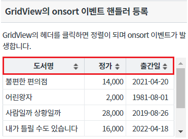
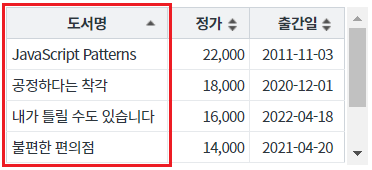
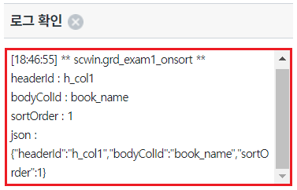
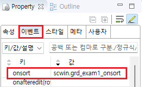
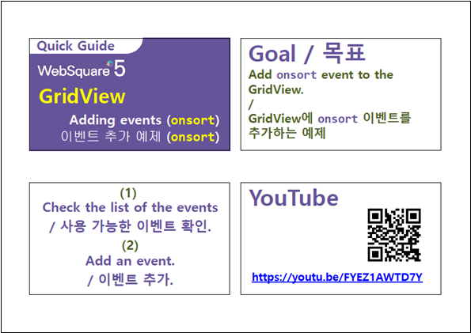

[GridView] Event - onsort (헤더를 클릭 또는 더블클릭하여 데이터 정렬된 경우 발생)
1개요
GridView의 이벤트 onSort 예제입니다. onSort 이벤트는 GridView의 헤더에 클릭이나 더블 클릭으로 정렬이 변경된 경우 발생합니다. 이벤트 핸들러를 지정하면 핸들러에서 정렬이 발생한 헤더의 ID, 바디의 ID, 정렬 구분(오름차순, 내림차순, 정렬안함)값을 확인할 수 있습니다. DataList의 API를 이용하여 정렬된 경우는 발생하지 않습니다. ex) DataList의 함수 sort, multisort 등
2구현된 기능
이벤트 onsort 발생 시 로그 출력하기
3예제 테스트 방법
3.1이벤트 onsort 발생 시 로그 출력하기
- STEP1. 초기 상태 확인하기
영역 [GridView의 onsort 이벤트 핸들러 등록]의 GridView를 확인합니다.
GridView의 헤더에 정렬 기능이 활성화되어 있습니다.
[브라우저(Chrome) 실행 예시]

- STEP2. 헤더 컬럼의 정렬 기능 아이콘을 클릭합니다.
헤더 컬럼 '도서명'을 클릭합니다.
- STEP3. 실행 결과를 확인합니다.
컬럼 '도서명'의 데이터가 오름 차순으로 정렬됩니다.
[브라우저(Chrome) 실행 예시]

onsort 이벤트가 발생되고 이벤트 핸들러가 실행되어 로그가 출력됩니다.
영역 [로그 확인] 또는 브라우저의 개발자 도구의 콘솔(console)탭에 출력된 로그를 확인합니다.
[브라우저(Chrome) 실행 예시 - 로그 확인]

4구현 예시
4.1이벤트 onsort의 핸들러 지정하기
- STEP1. GridView의 속성을 정의합니다.
정렬 기능을 사용하기 위해 아래의 속성을 설정합니다.
[필수] sortable="true" //gridView의 헤더 클릭을 통한 데이터 정렬 지원 여부
[선택] showSortableImage="true" //정렬 가능한 컬럼의 헤더에 정렬 이미지를 출력.
[선택] sortEvent="onclick" //[default: ondblclick, onclick] 정렬을 수행할 이벤트를 정의.
그림 1.웹스퀘어5 SP5 스튜디오의 Property View(속성창) 예시

[소스 코드 예시]
<!-- gridView 의 소스 본문 예시 --> <w2:gridView sortable="true" sortEvent="onclick" showSortableImage="true" id="grd_exam1" dataList="data:dlt_books_1"> <!-- 중략 --> </w2:gridView>
- STEP2. GridView의 이벤트 onsort 핸들러를 지정합니다.
예제 파일에서는 핸들러로 사용할 함수명을 scwin.grd_exam1_onsort로 정의하였습니다.
그림 2.웹스퀘어5 SP5 스튜디오의 Property View(속성창)의 이벤트 탭 예시

[소스 코드 예시]
<!-- gridView 의 소스 본문 예시 --> <w2:gridView ev:onsort="scwin.grd_exam1_onsort" id="grd_exam1"> <!-- 중략 --> </w2:gridView>
STEP3. 핸들러 함수 scwin.grd_exam1_onsort를 정의합니다.
[소스 코드 예시]
/** * GridView grd_exam1의 onsort 이벤트 핸들러 */ scwin.grd_exam1_onsort = function(artSortInfo) { //로직 구성 //console에 log 출력 console.log(artSortInfo); };
5주요 API
sortable
showSortableImage
sortEvent
onsort
6참고 문서
[웹스퀘어5 SP5 개발 가이드] GridView
링크 : https://docs1.inswave.com/sp5_user_guide/bc10c1b82c9a2a0b#e1c4658baf7e726f
[웹스퀘어5 SP5 개발 가이드] GridView 정렬
링크 : https://docs1.inswave.com/sp5_user_guide/86bdcf48029b958b#7bf6021f821511f7
[웹스퀘어5 SP5 개발 가이드] GridView onsort
링크 : https://docs1.inswave.com/sp5_user_guide/86bdcf48029b958b#2f1e7338bd8257e0
7참고 동영상
GridView onsort
링크 : https://youtu.be/FYEZ1AWTD7Y
